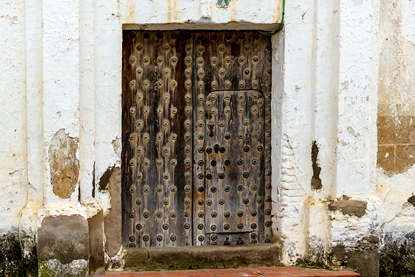
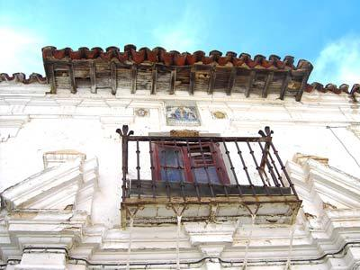

Casa de la Conca
Testigo de piedra del pasado noble y próspero de la villa.
Arquitectura señorial e historia en el corazón de Herrera del Duque
La conocida popularmente como Casa de la Conca —también denominada históricamente Casa del Conco o Casa de la Encomienda de Alcántara— es una de las construcciones civiles más emblemáticas de Herrera del Duque y uno de los mejores ejemplos de arquitectura señorial conservados en la localidad.
Situada en la histórica calle San Juan, muy próxima a la Iglesia de San Juan Bautista, esta casona refleja el pasado nobiliario y administrativo de la villa, vinculado durante siglos a la Orden de Alcántara y a las antiguas familias hidalgas de la comarca.
Una casa ligada a la Encomienda de Alcántara
La Casa de la Conca perteneció antiguamente a la denominada Encomienda de Alcántara y está fechada en torno al siglo XVII.
Su importancia histórica no solo reside en su antigüedad, sino también en el papel institucional y señorial que desempeñó dentro de la organización histórica del territorio. Herrera del Duque estuvo durante siglos bajo la influencia de importantes linajes y órdenes militares, especialmente la Orden de Alcántara, cuya presencia dejó una profunda huella en el urbanismo y patrimonio de la localidad.
Una fachada para observar con detalle
Uno de los mayores atractivos de la Casa de la Conca es su fachada, que conserva numerosos elementos característicos de la arquitectura señorial extremeña.
El edificio presenta una imagen sobria y sólida, propia de las grandes casonas rurales nobiliarias:
- Muros de gran espesor
- Composición equilibrada
- Escasa ornamentación exterior
- Sensación de fortaleza y prestigio
Las rejerías: símbolo de prestigio
Las ventanas conservan elegantes rejerías de forja tradicional, consideradas uno de los elementos más destacados del edificio.
Según las referencias patrimoniales de Turismo La Siberia, estas rejas incorporan la flor de lis, símbolo relacionado con la antigua Encomienda de Alcántara.
Además de aportar seguridad, los enrejados eran también una forma de representación social y prestigio familiar. Su trabajo artesanal constituye uno de los mejores ejemplos de forja histórica conservada en el casco urbano.
Los azulejos heráldicos de la fachada
Uno de los elementos más singulares de la Casa de la Conca son los azulejos heráldicos históricos documentados en su fachada.
Diversos estudios patrimoniales localizan en la denominada “Casa del Conco”, en la calle San Juan, un conjunto cerámico fechado aproximadamente hacia el año 1700 y elaborado en talleres de Talavera de la Reina.
Estos azulejos muestran simbología religiosa y heráldica de gran interés:
- Representación franciscana con los brazos cruzados de Cristo y San Francisco frente a la cruz
- Símbolos relacionados con la Inquisición y la Orden de Predicadores dominica
- Decoración cerámica de tradición barroca
Los estudios apuntan además a posibles vínculos estilísticos con los paneles cerámicos del cercano Convento de la Purísima Concepción, lo que sugiere la intervención de un mismo taller o autor.
Puerta principal y arquitectura tradicional
La vivienda responde al modelo clásico de gran casa solariega extremeña:
- Acceso principal de gran tamaño
- Vanos proporcionados
- Ventanas rectangulares
- Composición sobria y funcional
Este tipo de edificaciones combinaban residencia noble con dependencias vinculadas a la actividad agrícola y ganadera, fundamentales en la economía tradicional de La Siberia.
Un conjunto de casas señoriales en Herrera del Duque
La Casa de la Conca no es un caso aislado. Herrera del Duque conserva todavía un interesante conjunto de casas solariegas y construcciones nobiliarias que muestran la importancia histórica de la localidad.
Estas construcciones reflejan el pasado señorial de la villa, la influencia de órdenes militares, el peso de la economía agrícola y ganadera y la arquitectura civil tradicional extremeña.
Patrimonio civil de La Siberia extremeña
Aunque el castillo domina el perfil de Herrera del Duque, edificios como la Casa de la Conca permiten descubrir otra parte fundamental de la historia local: la vida cotidiana de las familias nobles y acomodadas que habitaron la villa durante siglos.
Su fachada, sus rejas y sus elementos cerámicos convierten esta casa en uno de los ejemplos más interesantes del patrimonio civil de La Siberia.
Un rincón para mirar despacio
Visitar la Casa de la Conca es una invitación a detenerse y observar. Cada detalle de su fachada —las rejerías, los azulejos, la piedra, los símbolos heráldicos— conserva fragmentos de la historia de Herrera del Duque.
Un edificio que sigue manteniendo viva la memoria arquitectónica y señorial del municipio.
Galería de fotos

